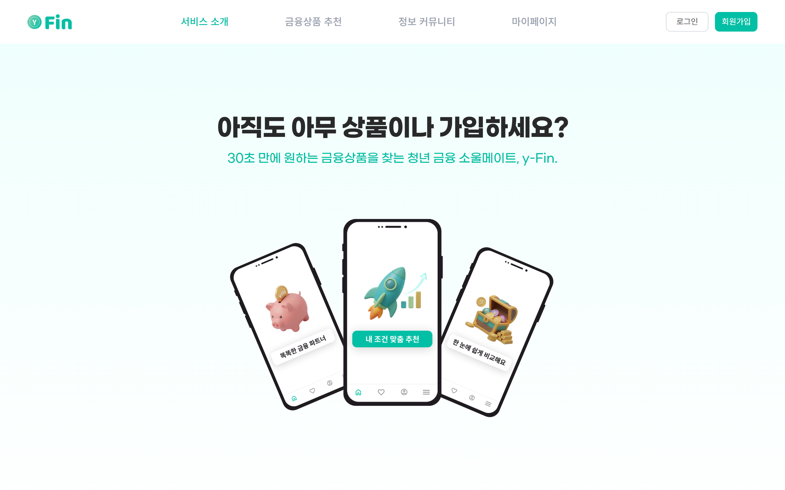
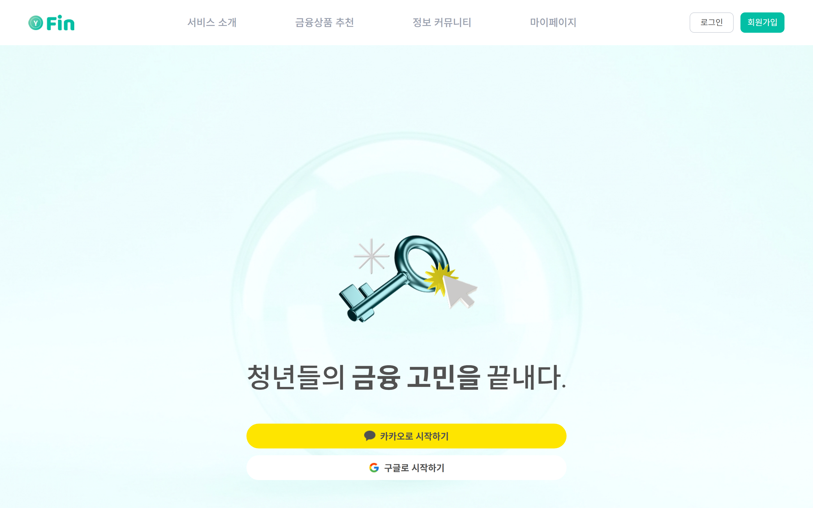
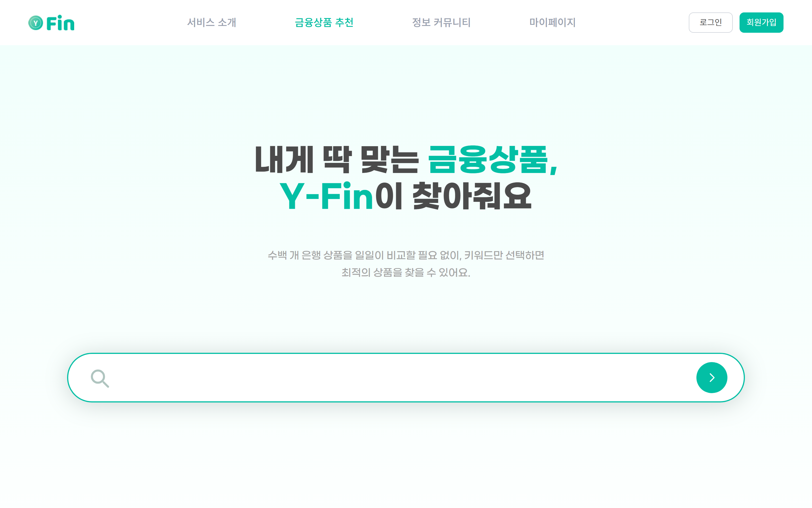
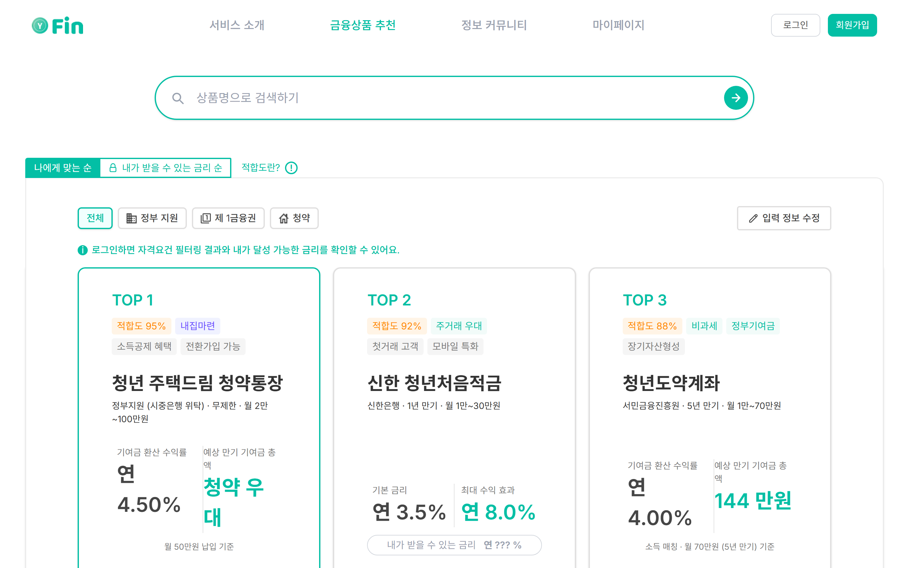
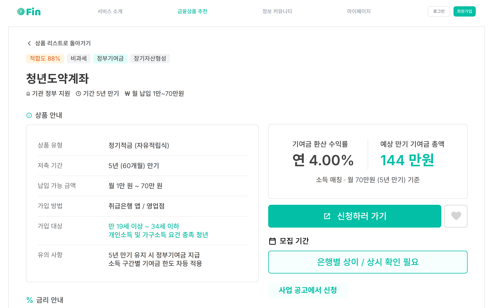
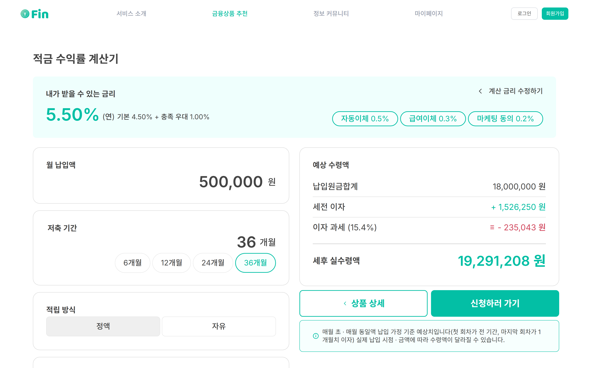

19~34세 금융초보 청년을 위한 맞춤 예·적금 추천 서비스. 선택지는 391개, 그중 무엇이 '내 것'인지 판단하기 어렵다.
결과 — 청년 64%가 비교만 하다 이탈하고, 가입 후에도 16%가 중도 해지. Y-Fin은 "모으고 → 거르고 → 정렬"로 이 문제를 푼다.
소개부터 금리 계산까지 6단계 사용자 여정. 제가 만든 백엔드가 이 화면들의 데이터를 공급합니다.






팀 6인 (PO 이서빈 · BE 강지원·최유렬 · PD 정예담 · FE 안지원·이예은) 중 백엔드 데이터 파이프라인과 추천 엔진을 담당.
수집·가공·서빙 계층을 분리해, 대출·마이데이터 API가 추가돼도 구조가 바뀌지 않도록 설계. 이번 학기 작업은 이 5개 계층 전반에 걸쳐 있습니다.
출처마다 형식이 제각각인 원천 데이터를, 추천 엔진이 쓸 수 있는 일관된 스키마로 정제.
규칙으로 추출이 어려운 항목(우대조건·가입조건 등)은 LLM(Gemini)으로 보강. 단, 잘못된 값이 추천에 섞이지 않도록 방어.
# application-dev.yml — 재현성 위해 온도 최소화
collector:
llm:
model: gemini-2.x
temperature: 0.1 # 창의성↓ 사실성↑
prompt-schema-version: 3 # 캐시 무효화 키
청약·정책 상품은 공개 API가 없다. 그래서 수집 계층과 동일한 규격으로 흐르는 수동입력 경로를 새로 구축.
대표 커밋 3b3c2da 6793621 3ce3e1f
＋131줄 정규화기 · ＋98줄 tasklet · JSON 68행 시드
"내 자격으로 거르고, 내가 받을 금액 순으로 정렬" — 추천 결과의 정확성을 좌우하는 핵심 로직을 재점검.
추천 리스트에서 상품을 누르면 보이는 상세페이지의 백엔드. 데이터를 한데 모아 내려주고, 적합도까지 함께 제공.
GET /api/products/{id}/detail
{
"productId": 128,
"provider": "카카오뱅크",
"fitScore": 87, // 적합도(0~100)
"baseRate": 3.0,
"achievableRate": 3.8, // 실제 받을 수 있는 금리
"applyUrl": "https://...",
"properties": [ /* 컬럼 정규화된 속성들 */ ]
}
앞서 설명한 백엔드 작업이 실제 화면의 어느 값으로 나타나는지 — 코드가 곧 사용자 경험.
"추천 결과에 오류가 없도록" — 데이터·로직 변경마다 테스트를 함께 작성.
테스트 관련 파일만 20+ 곳 수정 — 데이터 계층의 회귀를 조기에 잡는 안전망.
결과 — 추천 엔진이 신뢰할 수 있는 데이터 위에서 동작하도록 뒷단을 완성. MVP P0 기능 개발 완료.
감사합니다
202148124 최유렬